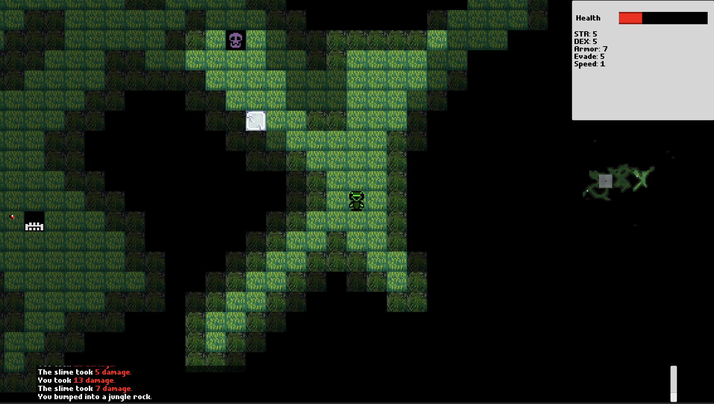
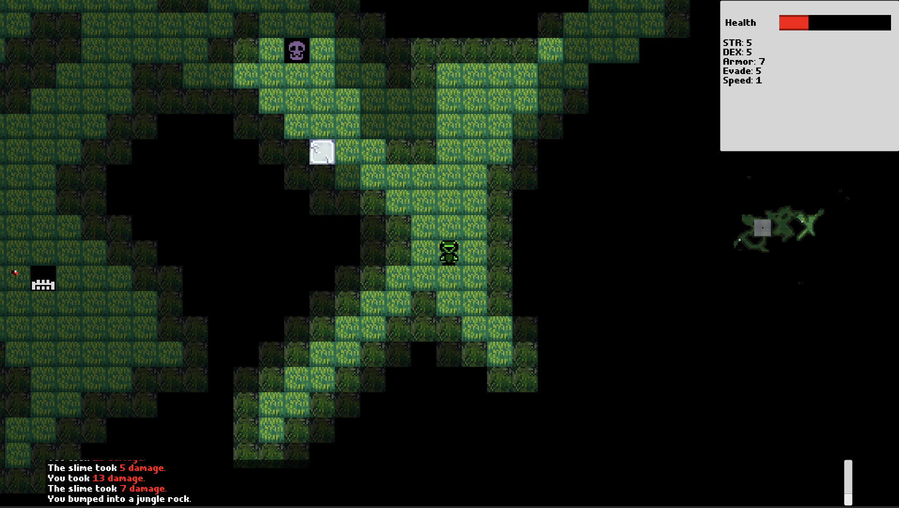

Spring 2021 - Game Programming (Unity)
Escape From Lab 8 is a roguelike dungeon crawler, where you play as a unnamed test subject who must complete a deadly challenge to keep their life.
The player's movement is confined to a grid and the plyer must collect items, defeat monsters, and navigate through a procedurally generated environment to make it to the end of each level. There are a total of 3 levels, and each level has a different theme.
At the beginning of the semester, our project lead had already created some starter code for placing rooms and connecting them together. It was a great start! However, all of the rooms were rectangular and they were all roughly the same size. I started by extending the existing room creation framework to allow for more complicated and interesting environments, which I used extensively in Level 1.
Here's a short summary of the steps for generating the cave room via cellular automata:


 The images on the left were used to generate the environment on the right.
The size of the rooms is randomly generated within a range of valid values,
similar to Level 1.
The images on the left were used to generate the environment on the right.
The size of the rooms is randomly generated within a range of valid values,
similar to Level 1.
Overview
This is my 6th project with Game Creation Society (GCS) at CMU.Escape From Lab 8 is a roguelike dungeon crawler, where you play as a unnamed test subject who must complete a deadly challenge to keep their life.
The player's movement is confined to a grid and the plyer must collect items, defeat monsters, and navigate through a procedurally generated environment to make it to the end of each level. There are a total of 3 levels, and each level has a different theme.
My Role
My role in this project was creating interesting environments for each of the 3 levels. I programmed procedural room generation for 2 of the levels and integrated it into the existing room placement pipeline. I also programmed a tool that reads level assets (encoded as PNG) and imports the level game.At the beginning of the semester, our project lead had already created some starter code for placing rooms and connecting them together. It was a great start! However, all of the rooms were rectangular and they were all roughly the same size. I started by extending the existing room creation framework to allow for more complicated and interesting environments, which I used extensively in Level 1.
Level 1
I added circular rooms, rectangular rooms, and annulus (2D donut) rooms. The width and height of the rooms are randomly generated between 2 constants, which is specified inside of the Unity Editor.Level 2
Instead of many different rooms, this level is one giant cave room. I used the cellular automata approach for generating the room. The environment is modelled as a 2D array of ones and zeros. A 0 means that the tile is a wall and the player cannot cross through, and a 1 means that the tile is open and the player can walk through. The grid is initially populated randomly with 0's and 1's and then the grid gets updated according to a special set of rules (explained below).Here's a short summary of the steps for generating the cave room via cellular automata:
- Fill up a grid with random binary noise.
- If a cell has more than X '1' nighbors, this cell gets converted to a 1. Otherwise, it dies and becomes a 0.
- Repeat the previous step until the grid looks cool

Level 3
Similar to level 1, level 3 features many long hallways and geometric open rooms. However, the main difference is that level 3's rooms are generated by sampling from image textures whereas level 1's rooms are generated solely with code.
The images on the left were used to generate the environment on the right.
The size of the rooms is randomly generated within a range of valid values,
similar to Level 1.